- Voor Android: Powerall CRM.
- Voor Apple op iTunes: Powerall CRM.
Tip: Zoek op Powerall CRM App in de app store. Voor een beschrijving of versie informatie van deze app zie bovenstaande sites.
In dit hoofdstuk staan de meestgestelde vragen over de Powerall CRM App.
De app kan in de App store of Playstore gedownload worden.
Tip: Zoek op Powerall CRM App in de app store. Voor een beschrijving of versie informatie van deze app zie bovenstaande sites.
De layout is helemaal vernieuwd conform Powerall Connect 3.0.
Het volgende functies zijn toegevoegd:
Op het Dashboard is Mijn offertes toegevoegd. Mijn offertes:
Mijn offertes:
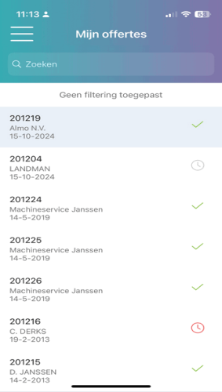
Alle offertes van de gebruiker/verkoper zijn zichtbaar.
Offertes kunnen gebruikt worden.
De gebruiker moet geautoriseerd worden voor Offertes bij Onderhoud personeelscode, tabblad CRM App. Het veld Offertes tonen moet op ja staan.
Zie Ga naar Onderhoud personeelscodes (BTP).
Indien niet geautoriseerd, zijn Mijn Offertes en tabblad Offerte niet zichtbaar.
Bij Instellingen offertes, tabblad Uitvoer printer moeten de layout velden Standaard/Machine offerte PDF t.b.v. CRM app gevuld zijn:

Bij de Relaties details is tabblad Offerte toegevoegd. De volgende gegevens worden weergegeven:
De offerte details (alleen de kop van de offerte, geen regels)
De status van de offerte
De relatie details
PDF offerte (incl. regels)
Word offerte
De PDF en Word offerte kan gedeeld, verzonden en afgedrukt worden.
Opmerking: Een PDF-offerte wordt pas gemaakt bij Einde offerte.
Machines
Het volgende functies zijn toegevoegd:
Dit heeft te maken met de standaard instelling van de Powerall CRM App m.b.t. de plaatsbepaling.
Uw licentie is ontoereikend, 0 van maximaal 0 gebruikers(s) zijn al actief.
Na verloop van tijd verloopt de beta versie van de Powerall CRM App omdat deze verouderd is en er een nieuwe versie uit gekomen is. De nieuwste versie van de Powerall CRM App moet dan gedownload worden.
De volgende aanvullende informatie wordt gegeven:
De werking van de Werkbon App is hetzelfde als de Powerall CRM App.
Opmerking: In het Mijn Powerall / klantenportaal is het aantal gebruikte seats te zien, zie Seats gebruik. Ook kan hier een seat verwijderd worden.
Aan de betreffende gebruiker is geen personeelscode gekoppeld.
Opmerking: Je kunt dit zien op het dashboard, waar achter welkom de personeelsnaam staat.
• Indien de personeelscode nog niet aanwezig is, voeg deze dan toe via Onderhoud personeelscodes.
Ga naar 4.c bij Onderhoud gebruikers.
De gebruiker is gekoppeld aan een personeelscode.
In de App wordt bij Welkom de naam weergegeven.
Als de klantweergave aangezet wordt, is bepaalde informatie niet zichtbaar. Dit geldt voor het volgende:
Notities
Deze zijn niet zichtbaar, er wordt niets getoond. Ook niet 'Mijn acties' of de melding Geen resultaten / notities.
Machines
Op tabblad Algemeen wordt alleen de adviesprijs en niet de handelsprijs weergegeven.
Op tabblad Transactie is het totaalbedrag artikelen en de artikelprijs niet zichtbaar.
De bedragen van de werkorder regels zijn niet zichtbaar, alleen aantallen.
De interne notities zijn niet zichtbaar.
Bij de melding: Locatievoorziening uitgeschakeld moet de toegang tot de locatie aan staan. Ook er moet een actieve GPS -of Wifi verbinding zijn, anders kunnen de afstand in km's niet berekend worden.
Om op te geven of te wijzigen, doorloopt u de volgende stappen:
Ga naar Relatie details en scroll naar beneden.
Bij CRM kenmerken druk op de toets Bewerken.

Selecteer het CRM kenmerken, bijv. Soort bedrijf of Aantal machines:
Waarde = N:
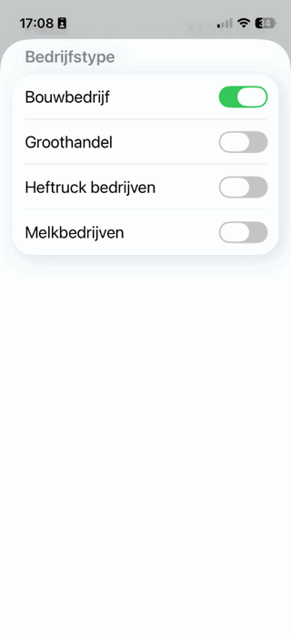
Waarde = J:
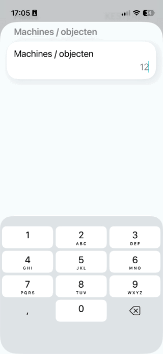
zie: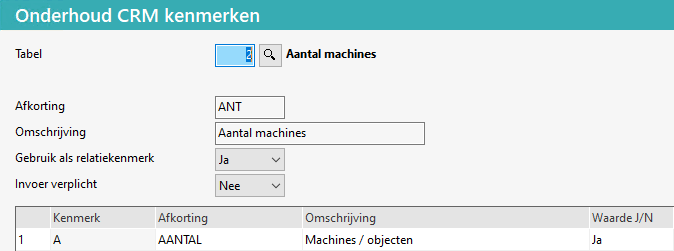
Kies voor de knop OPSLAAN.
De gegevens zijn opgeslagen.
Ja, als bij Onderhoud machines (MBB), tabblad Service de eindgebruiker ingevuld is.
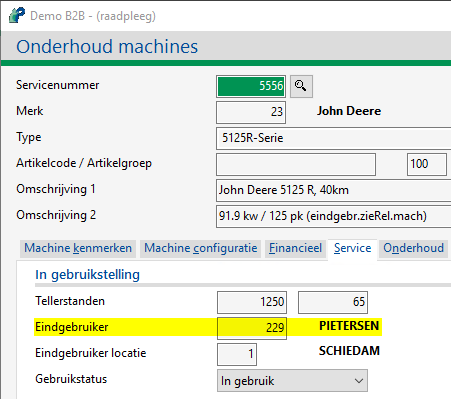
In de Powerall CRM App is deze bij de betreffende Relatie, tabblad Machine zichtbaar.
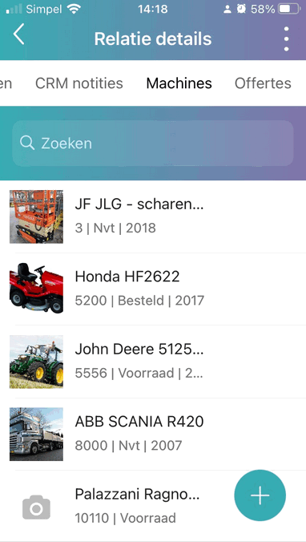
Opmerking: Bij Opvragen machines, tabblad Machines, is het ook mogelijk om deze te zien, bij een speciale instelling. Neem hiervoor contact op met de helpdesk.
Ga naar Artikelen.
Druk op het Scanner symbool, rechts boven.
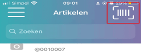
Als de App om toestemming tot de camera vraag, geef dan akkoord.
Plaats de barcode in het midden van het scherm (op rode lijn).
De artikelcode wordt gescand (het scannen gebeurt automatisch).
Bij een artikel of machine, tabblad Afbeeldingen, kunnen de volgende foto's worden toegevoegd worden:
Standaard
Voor website
Artikel: 
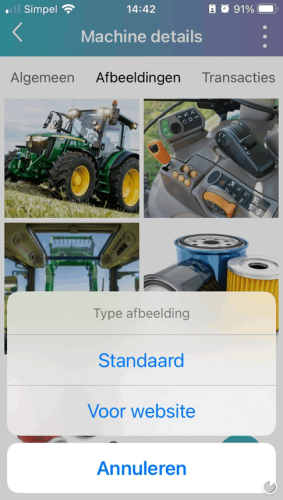
Bij Machine, kan vervolgens gekozen worden voor:
Foto maken
Selecteren uit galerij
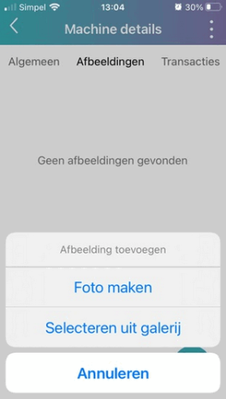
Om dit te doen, doorloopt u de volgende stappen:
Ga naar Machines of Artikelen.
Selecteer een machine of artikel
Ga naar tabblad Afbeeldingen.
Druk op Sorteren of verwijderen.
Sorteer:
Druk op de afbeelding en sleep deze naar de juiste positie.
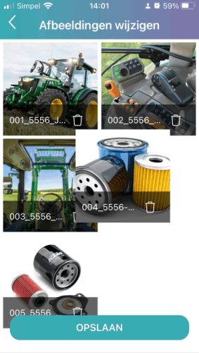
Verwijder:
Druk op (prullenbak knop).
iOS: Kies voor de knop Opslaan.
Andriod: Kies voor de knop Opslaan.
De gegevens zijn opgeslagen.
Het is mogelijk om de machines te filteren op de diverse in- en verkoop statussen. Om dit te doen, doorloopt u de volgende stappen:
Druk op het filter symbool (rechtsboven).
Vink de betreffende statussen aan op uit.
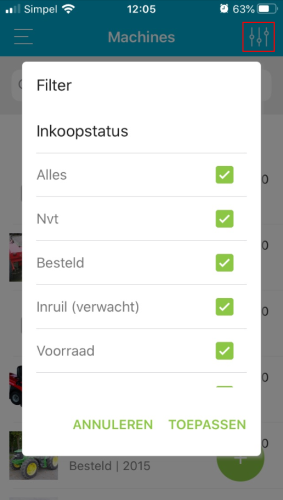
Kies voor de knop TOEPASSEN.
De betreffende machines worden weergeven.
Het is mogelijk om de machines te filteren op machine (hoofd)groep. Om dit te doen, doorloopt u de volgende stappen:
Ga naar Machines.
Druk op Blader door groepen (bovenaan). 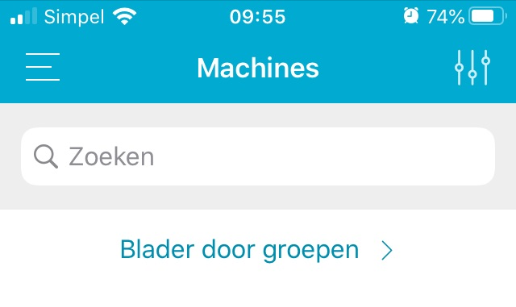
Selecteer een groep:
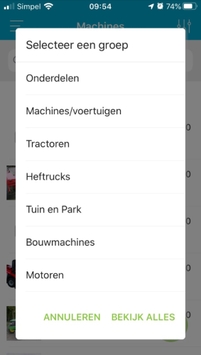
Kies voor de knop BEKIJK ALLES.
De machines van deze groep worden weergegeven.
De website foto's in Powerall Connect worden als volgt ge- of hernoemd:
5556.001.jpgOpmerking: Deze website foto's staan in de betreffend dossier map van de machine.
De volgende instellingen kunnen gebruikt worden.
Om van administratie te wisselen, doorloopt u de volgende stappen:
De geselecteerde administratie is actief.
Om van taal te wisselen, doorloopt u de volgende stappen:
De CRM app wordt in de geselecteerde taal weergegeven.
Het volgende kan geautoriseerd worden voor een gebruiker:
| Omschrijving | Gebruik | Aanmaken | Wijzigen |
|---|---|---|---|
| Gebruik Powerall CRM App | J/N | ||
| Relatie aanmaken / wijzigen | J/N | Ja | Ja |
| Contactpersoon aanmaken / wijzigen | J/N | Ja | Ja |
| Machine aanmaken / wijzigen | J/N | Ja | Ja |
| Inkoopprijzen tonen | J/N | ||
| Offertes tonen | J/N |
Dit kan bij Onderhoud personeelscodes (BTP) bij tabblad CRM app.
De beveiliging van de Powerall CRM App is als volgt:
De ondersteuning voor een bepaalde iOS-versie eindigt zodra Apple de ondersteuning stopt. Hierbij enkele opmerkingen:
Alleen apparaten worden ondersteund mits de laatste updates geïnstalleerd zijn.
Tip: Gebruik de uitvouw knop  (boven U bent hier:) om alle vragen uit - of in te vouwen.
(boven U bent hier:) om alle vragen uit - of in te vouwen.
Gerelateerde onderwerpen
Copyright ©
{kind=link}
{kind=link}
{kind=link}